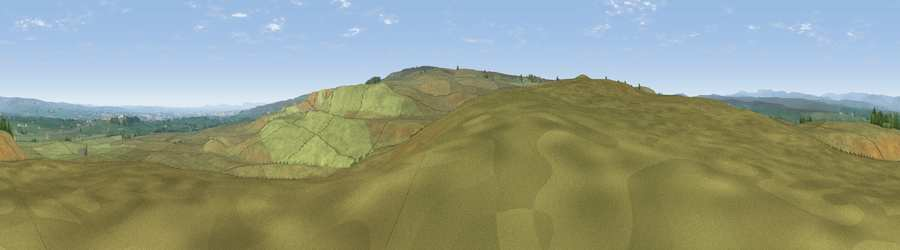

Viewpoint near Bowes
#12784 in England · top 31% of its area beats it · near Bowes · open accessWhere it is
The exact computed spot (NY 99875 11025). Click the marker for map links.
Public access: this spot lies on mapped open-access land (CRoW Act 2000) — you may roam here on foot. Computed from Natural England's CRoW access layer and OpenStreetMap rights of way — not the legal definitive map. Always verify locally.
The view, rendered

A 360° render of this exact spot computed from the terrain model, tree cover and land cover — summer colours, afternoon light, calibrated against photographs of famous viewpoints. Real trees, hedges and buildings will differ in detail.
The panorama
Grey silhouette: terrain skyline in each direction (720 bearings, Earth curvature and refraction included). Dashed green: skyline with trees (+15 m) and buildings (+8 m) as obstacles. Blue strip: how far the ground is visible on each bearing.
Where the view opens
Wedge length = distance to the farthest visible ground on that bearing (vegetation-aware). Rings at 10, 25 and 50 km.
What fills the view
96% grassland · 2% cropland · 2% woodland ·
Angular shares of the visible panorama (visual magnitude), not map area. Landscape diversity 0.09 (0–1 Shannon).
Key numbers
More beautiful places nearby
The staircase of upgrades: each row has a higher view potential than everything closer. Driving times are estimates from straight-line distance, calibrated against real road routing — check an actual route before setting out.
| Place | Direction | Drive | Score |
|---|---|---|---|
| Viewpoint near Bowes | SW · 0 km | ~2 min | 60.1 |
| Viewpoint near Bowes | SE · 1 km | ~3 min | 62.9 |
| Viewpoint c10154_8017 | SSE · 3 km | ~8 min | 70.0 |
| Viewpoint near Barningham | SE · 5 km | ~11 min | 74.1 |
| Viewpoint near Eggleston | N · 13 km | ~24 min | 76.0 |
| Viewpoint c10024_7603 | WSW · 22 km | ~37 min | 76.9 |
| Viewpoint near East Witton | SSE · 30 km | ~47 min | 77.8 |
| Calders | WSW · 36 km | ~54 min | 79.0 |
54.49456, -2.00344 · source: screening · position refined by local search. Computed location — check access rights before visiting.